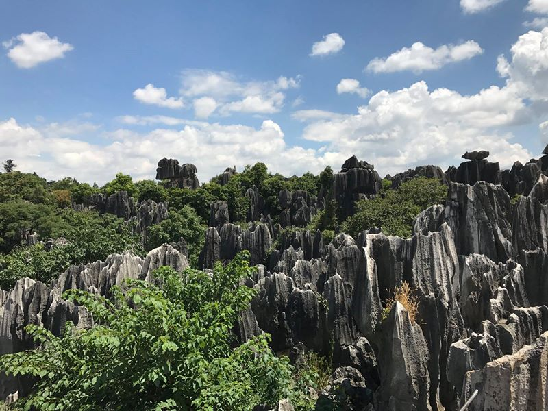
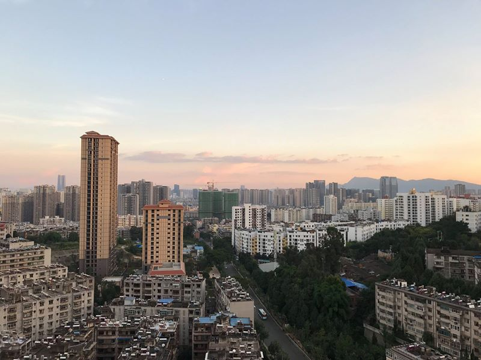
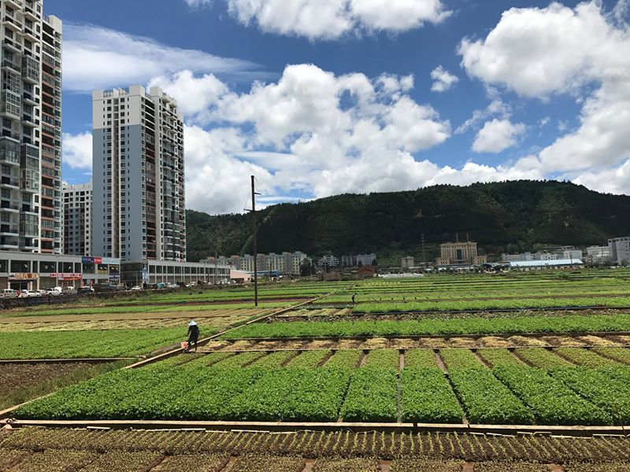
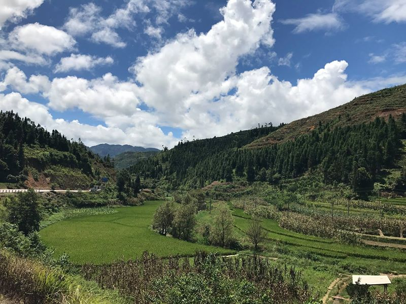

Čína - 2. část léto 2017
V Kunmingu jsem si koupil kolo a vydal se s ním přes čínskou provincii Yunnan až do Vietnamu.
První část: https://www.facebook.com/media/set/?set=a.1680859211924275.1073741841.1086933947983474&type=1&l=cf9a47a2aa
Den přes mým plánovaným odjezdem do Hong Kongu jsem se tedy sešel s Číňankou v japonské restauraci. Neuměla téměř vůbec anglicky, a tak za nás komunikovaly jen překladače. Teda abych jí nekřivdil, uměla 4 slova a fráze: “happy?" (univerzální otázka, očekává se souhlas), "not happy?" (univerzální otázka, očekává se možný nesouhlas), “hungry?" (otázka před každým chodem jídla) a “full?" (otázka po každém chodu jídla). Vystudovala totiž na univerzitě MEZINÁRODNÍ obchod, takže uměla i několik slov anglicky. Ale i tak to bylo fajn, od té chvíle jsem přestal ignorovat lidi, kteří neumí anglicky.
Foto o pár dní později. Tantan na rozdíl od Tinderu zobrazuje počet lidí, kterým se líbite. Mě takto označilo 160 dalších Číňanek, což mě potěšilo a přišlo mi to strašně moc, takže jsem se chtěl pochopitelně pochlubit. Ona za stejnou dobu dostala více než 22 tis. označení… Čína. Země, kde žije 1,3 mld. lidí.
Ale dost bylo Číňanek. Mám 20 dní do vypršení víza a přede mnou 2 tis. km do Hong Kongu. Poslední pohled na Kunming a podobně jako tento pán a jeho pes vyrážím vstříc lepším zítřkům!

Takhle vypadají křižovatky ve větších čínských městech. Na každé je několik policistů, kteří přes cestu natáhnou šňůru, aby nikdo nemohl jet na červenou. Jakmile padne zelená, policista dá šňůru pryč a ostatní mohou vjet do křižovatky. Proč se normálně nepoužívají semafory jako jinde ve světě mi není známo. Tohle je mimochodem pro Čínu typické. Mnoho lidí, kteří dělají úplně zbytečnou práci. V podzemí obchodních center jsou zase hlídači, kteří s píšťalkou pouze ukazují směr vyjíždějícím autem. Celý den třeba jen ukazují doleva.
Chlapec a dům na cestě do Shilinu.
Stone forest.

Stone forest podruhé.

Stone forest potřetí. Tentokrát s nějakou Číňankou.
Humans of China.
První den večer na cestě do Hong Kongu mi Číňanka napsala, zda se nechci sejít ještě jednou, že tentokrát vezme svoji sestřenici, která umí skvěle anglicky a že nám bude dělat překladatelku. Přestože jsem byl 100 km od Kunmingu, tak jsem souhlasil, doteď nevím proč. A tak jsem se druhý den vrátil jinou cestou zase zpět do Kunmingu a večer jsme se všichni sešli. Její sestřenice mi hned na začátku řekla, že je velmi “embarrassed”, že anglicky moc neumí, že to má jen v životopise, a tak jsem strávil celý večer se dvěma Číňankama, se kterými jsem komunikoval jen přes překladač. Ale když už jsou dvě, tak je ta komunikace docela plynulá, zatímco jedna píše otázku, druhé můžu odpovídat.
A nakonec jsem v Kunmingu strávil dalších několik dní. Na AirBnB jsem si našel Barbaru, která sem přicestovala z N. Zélandu a už zde zůstala. Otevřela si zde cukrárnu, kde jsem každý den dostával zdarma snídaně. Barbara zbožňuje cestování po komunistických zemích, příští rok navštíví i východní Evropu a řekla mi, že Česko rozhodně nevynechá.
Číňanka mě brala každý večer někam. Jednou do 3D kina na čínský fim, další den třeba na karaoke. Karaoke je čínský národní sport. Úplně všechny Číňanky, se kterými jsem mluvil, zbožňují karaoke. Nejznámější je KTv, zaplatíte tady cca 300 Kč na dvě hodiny, dostanete tablet se všemi možnými skladbami a zavřou vás do mistnosti. Co se děje tam, to by navždy mělo zůstat tam. Já chci jen říct, že pokud by se náhodou objevilo na YouTube nějaké video z karaoke, na kterém jsem já a jedna Číňanka, tak je to celé podvrh a kááámpáááň proti mně!
Samostatnou kapitolou je čínské jídlo. Jídelnímu lístku jsem moc nerozuměl, takže jsem vždycky jen ukázal na nějaké jídlo uprostřed (doufaje, že se trefím mezi předkrm a dezert) a modlil se, co mi přinesou.
Já si vybíral vždy spíše malé lokální restaurace. Tady jsem třeba večeřel pod dohledem Mao Ce-tunga.

V Číně se setkáte hlavně se dvěma typy jídel. První je hot pot. To je spíše společenská událost, nikdy ho nejí jeden člověk sám. Číňané říkají, že jdou buď na hot pot, nebo na večeři, hot pot má zvláštní postavení. Dostanete hrnec s kapalinou, je rozdělen na dvě části: jedna je pálivá, druhá je nepálivá. A podle chuti namáčíte různou zeleninu, druhy masa ap. v té či oné části. Hot pot v lokálních restauracích je levný, ale pak jsou speciální, luxusní restaurace, které jsou hodně drahé. Některé jsou otevřené 24 hodin denně a i ve 2 ráno jsou narvané k prasknutí, takže se musíte předem objednat.
Já jsem byl s Číňankou dvakrát v jedné z těch luxusnějších a pokaždé to byl zážitek. Dostanete tablet, kde si navolíte, co přesně chcete. Vybíráte ze stovek, možná tisíců různých druhů zeleniny, masa, nudlí a já nevím, čeho všeho. Vše vám postupně nosí, někdy je to spojeno i s uměleckým představením. K tomu všemu dostanete jednoho Číňana, který se stará o to, abyste měli pořád pití, aby se vařily jednotlivé potraviny při správné teplotě ap.
Druhé velmi oblíbené jídlo je barbecue. Opět si vybíráte všechny možné druhy masa a zeleniny a necháte si je ugrilovat. K tomu ještě často dostanete nudlovou polévku.
Číňané u jídla hodně mlaskají. Poprvé jsem to zažil s mojí hostitelkou v Xi’anu, kdy si začala vychutnávat hot pot a mlaskat na celou restauraci. Nejprve jsem si myslel, že je to jen její výrobní vada, ale pak jsem si všiml, že to dělají všichni.
Čína. Místo, kde se jezdí do sámošky ve Ferrari.
Loučení s Kunmingem podruhé. Tentokrát to bylo obtížnější, už jsem neopouštěl jen nějaký kontakt, ale čínskou přítelkyni. Přestože je hubená, do kapsy se mi bohužel nevejde, a tak jsem ji musel nechat v Kunmingu.

Osm dní do vypršení víza. Do Hong Kongu už to nestihnu, ale od začátku roku má Česko novou dohodu s Vietnamem, můžeme žádat o vízum online a do 3 dnů ho dostenem. Přede mnou asi 560 km na hranice. Rok jsem neseděl na kole, takže na 8 dní včetně rezervy by mohlo stačit.
Eiffelovka na cestě z Kunmingu. Do Paříže nemusíte!
Jezera v okolí Kunmingu.
Pro cestu jsem si myslím vybral ideální období.

Vjezdy do měst.
Pole hned vedle paneláků.

Na konci prvního dne mě napadlo, že mám vlastně ještě 7 dní a cca 460 km a že kdybych trochu pohnul, mohl bych dojet na hranice, tam nechat kolo a vrátit se ještě na jednu nebo dvě noci do Kunmingu... To mě nadchlo! Ale dostanu se na hranice tak rychle?

Čínská fauna.
Průsmyky na cestě na hranice.
Jednou jsem večer dojel do hostelu. Byl jsem unavený a chtěl jsem jít už spát, ale nikdo tam nebyl. Chvíli jsem čekal a postupně jsem začal zuřit, po mnoha týdnech jsem byl vážně naštvaný. Potřeboval jsem jít rychle spát, abych zase ráno mohl brzy vstát a místo toho jsem musel více než půl hodiny na někoho čekat. Pak přišel tenhle týpek, recepční, a hrál si s mobilem. Myslel jsem, že ho zabiju.
Pak jsem ale začal přemýšlet, proč jsem vlastně na tuhle cestu vyrazil. A že o nic přece nejde. Třeba nějaký jeho kamarád zrovna zachraňuje dítě z hořícího baráku a on mu přes mobil radí, jak to udělat. Třeba.
A tak jsem se s ním začal přátelsky bavit a došlo to až k tomu, že po mně za noc chtěl poloviční cenu a podobně jako všichni Číňani mě pozval na večeři, za kterou zaplatil zhruba stejnou cenu jako jsem mu dal já za ubytování v hostelu.
50 odstínů zeleně.
Na cestě na hranice.
Na okraji silnic jsou pro odtékající vodu často více než metr hluboké propasti. Vždycky jsem si říkal, jak je možné, že tam nikdo nevletí…
Skoro na hranicích.
Poslední den a 180 km přes hory. Od 5 ráno až do 10 večer téměř bez zastavení.
Checkpointy kolem hranice.
Jsem tam! Po 4 dnech jsem v Hekou, na druhé straně řeky je už Vietnam.
Večer jsem se doplazil do hotelu, moc jsem neměl čas ani chuť vybírat, takže jsem bral první, který jsem viděl. A vybral jsem dobře. Takhle třeba vypadala společná toaleta na chodbě.
Když jsem přišel na pokoj, na posteli jsem našel balíček 10 kondomů (kondomy jsou jinak mimochodem ve všech čínských hotelích jako standardní výbava pokojů) a za chvili mi někdo klepal na dveře. Do pokoje se mi vecpala jedna škaredá holka a zeptala se, zda nechci “beauty” na noc. Já jsem byl tak unavený, že jsem se nedokázal ani smát.
Moje čínská holka mi zatím koupila lístek na vlak zpět do Kunmingu a já se po 4 hodinách mohl zase balit na 6 hodin dlouhou cestu zpět. Kupéčko jsem sdílel s touto sympatickou rodinkou.
Tak třetina Číňanů neustále nosí roušku. V městech to dává smysl, tam je hodně prachu, ale proč ve vlaku?
Během cesty jsem neměl co dělat, tak jsem se alespoň učil psát její jméno.
A hned po příjezdu jsem dostal dáreček. Sadu na učení jezení jídla pomocí hůlek...
A tak jsem strávil další 3 dny v Kunmingu. Jinak až tady na této fotce jsem si všiml, že jsou Asiati opravdu žlutí.
Poslední den v Číně. Potřetí opouštím Kunming, tentokrát už opravdu. Nejprve 6 hodin vlakem zase na hranice, poté dlouhé desítky minut na hraniční kontrole kvůli dvěma razítkům z Turecka a návštěvě Ázerbájdžánu a pár minut před vypršením čínského víza mě vpouští do Vietnamské socialistické republiky. Good bye, China.